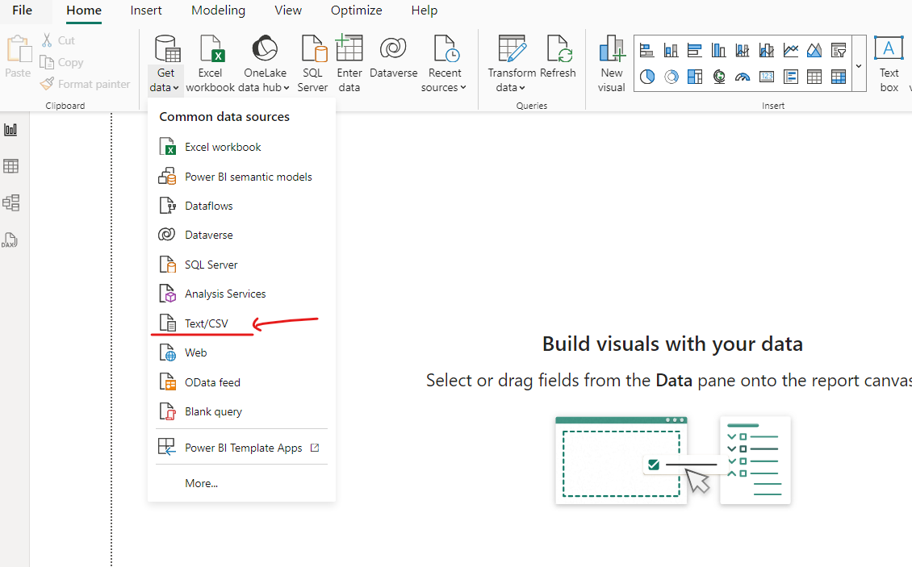
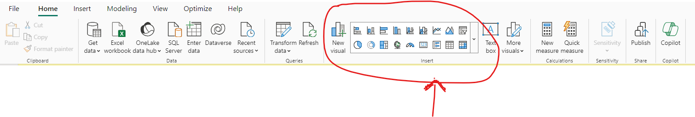
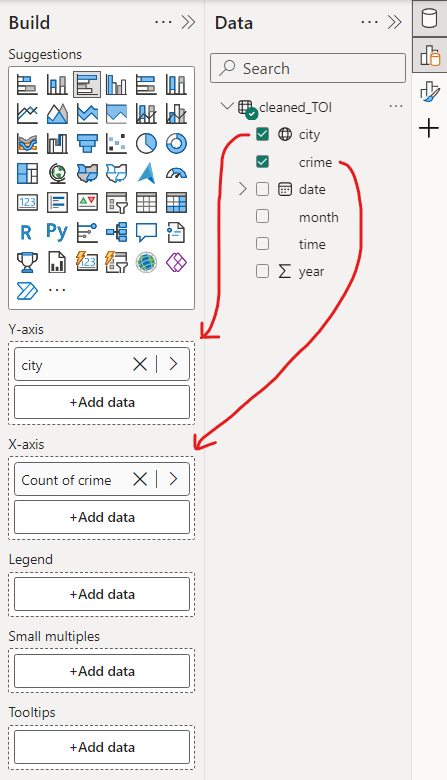
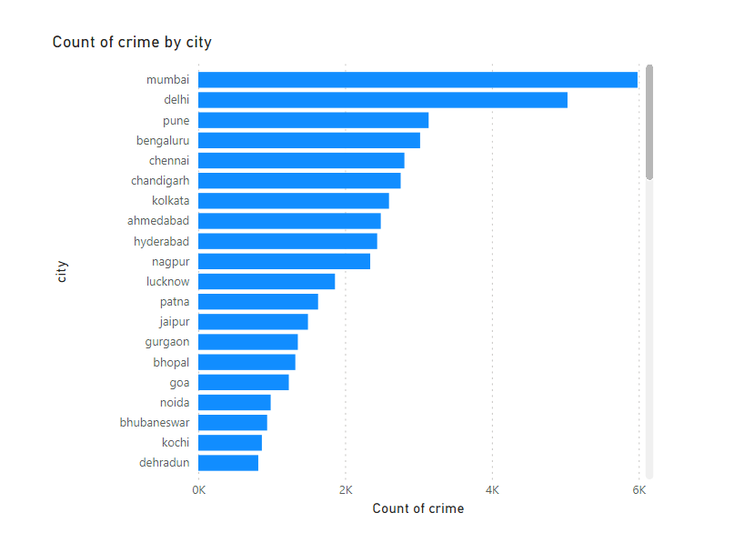

Step-by-Step Guide
- To create the visualization, we first need to import the dataset into PowerBI. Click on "Get Data" and then select "CSV". 
- After importing the dataset, we can create various types of visuals. Select the desired visuals from the options available: 
- Add data to the axis. 
- You will see that creating visuals in PowerBI is straightforward. You can create more graphs like this: 